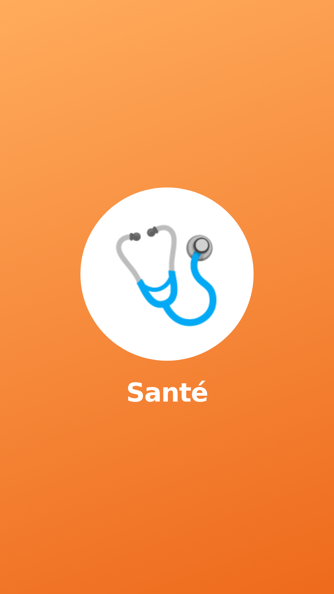
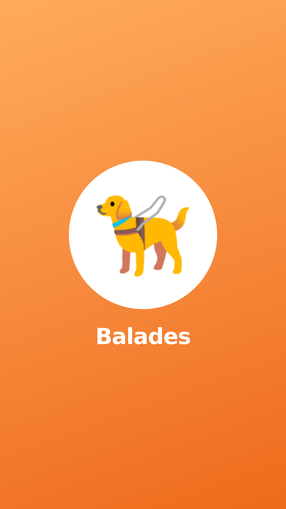
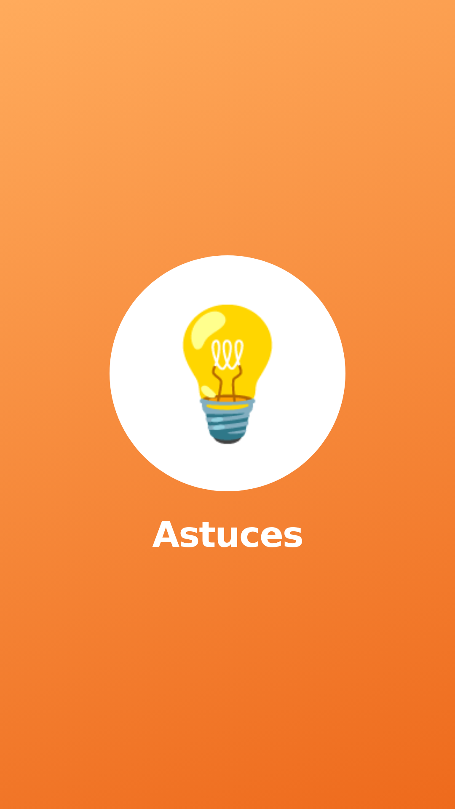
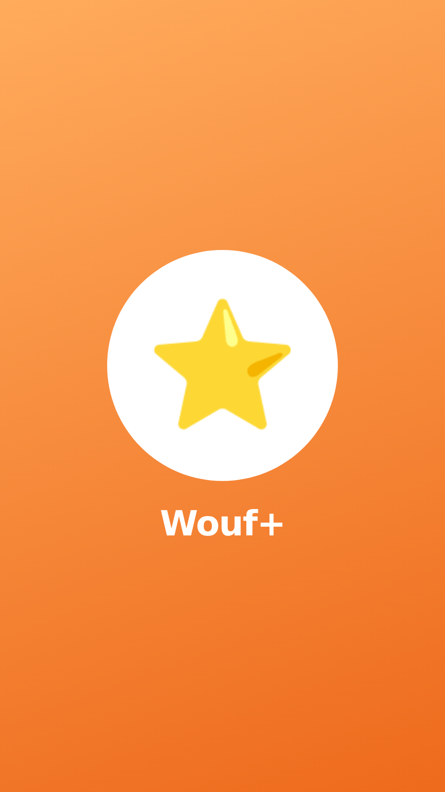
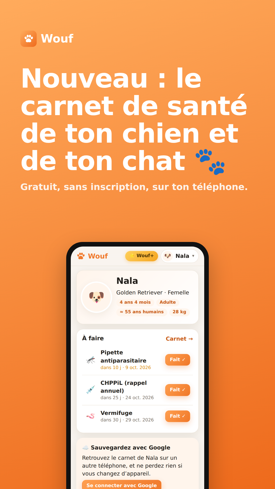
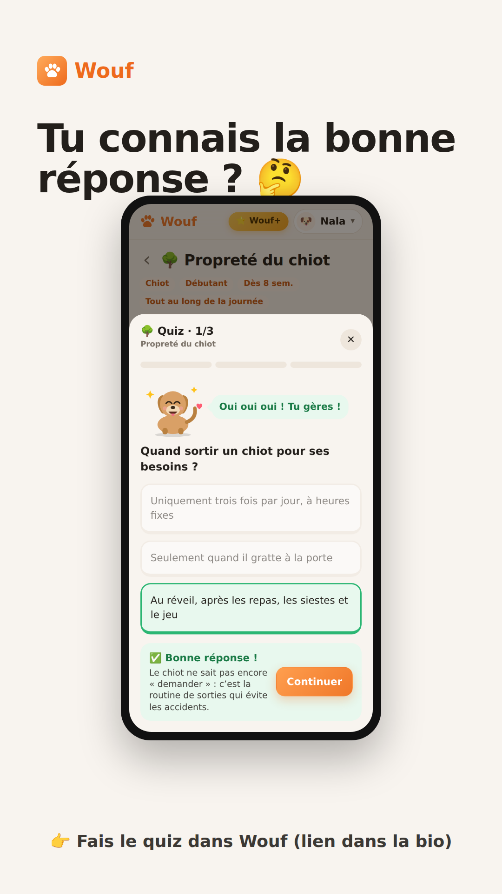
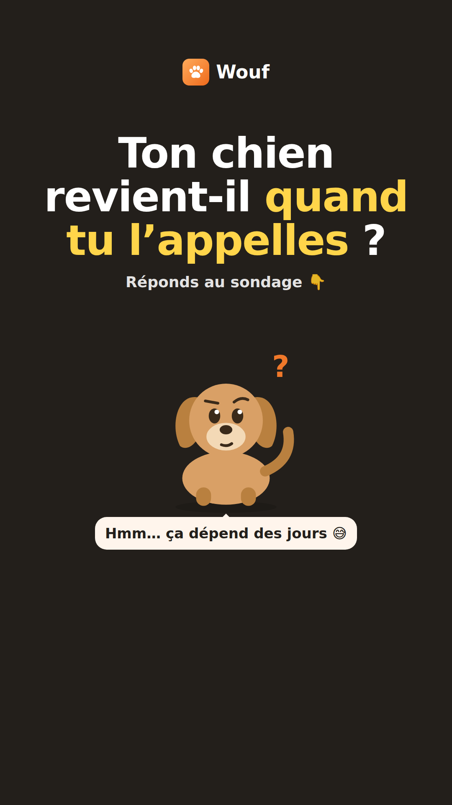
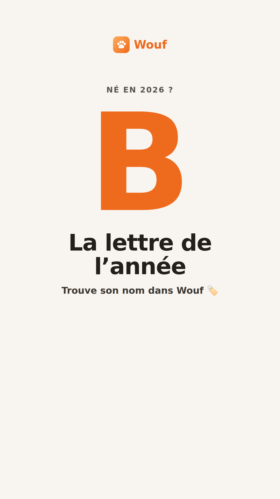

<title>Kit Instagram Wouf</title>
<link rel="preconnect" href="https://fonts.googleapis.com">
<link rel="stylesheet" href="https://fonts.googleapis.com/css2?family=Fredoka:wght@500;600;700&family=Nunito+Sans:opsz,wght@6..12,400;6..12,600;6..12,800&display=swap">
<style>
/* Mise en page : un guide de terrain, une colonne de lecture + galeries d'images au format Instagram. Couleurs = celles de l'app Wouf. */
:root{
  --bg:#f8f4ef; --card:#ffffff; --ink:#231f1b; --mut:#6f665c; --line:#ebe2d6; --pri:#ee6a1c; --priSoft:#fde7d6; --ok:#2b9a5c; --warn:#b86e00;
  --display:"Fredoka","Baloo 2",system-ui,sans-serif; --body:"Nunito Sans",system-ui,-apple-system,"Segoe UI",sans-serif;
}
@media (prefers-color-scheme:dark){:root:not([data-theme="light"]){--bg:#15120f;--card:#201c18;--ink:#f4ede4;--mut:#aa9f92;--line:#322b24;--pri:#ff8a3c;--priSoft:#3a2616;--ok:#5cc88a;--warn:#f0b04a;color-scheme:dark}}
:root[data-theme="dark"]{--bg:#15120f;--card:#201c18;--ink:#f4ede4;--mut:#aa9f92;--line:#322b24;--pri:#ff8a3c;--priSoft:#3a2616;--ok:#5cc88a;--warn:#f0b04a;color-scheme:dark}
*{box-sizing:border-box}
body{background:var(--bg);color:var(--ink);font:16px/1.55 var(--body);padding-inline:16px;padding-block:28px 60px}
main{max-width:980px;margin:0 auto;display:flex;flex-direction:column;gap:44px}
h1,h2,h3{font-family:var(--display);line-height:1.1;text-wrap:balance;margin:0}
h1{font-size:clamp(2.1rem,6vw,3.4rem);font-weight:700}
h2{font-size:clamp(1.5rem,4vw,2rem);font-weight:700;margin-bottom:6px}
h3{font-size:1.15rem;font-weight:600}
p{margin:0;max-width:68ch}
.lead{font-size:1.1rem;color:var(--mut)}
.eyebrow{font:800 .78rem/1 var(--body);letter-spacing:.12em;text-transform:uppercase;color:var(--pri)}
header{display:flex;flex-direction:column;gap:14px;padding-top:6px}
.brand{display:flex;align-items:center;gap:10px;font:700 1.3rem var(--display);color:var(--pri)}
.brand svg{width:40px;height:40px}
nav{display:flex;flex-wrap:wrap;gap:8px}
nav a{font-weight:700;font-size:.9rem;color:var(--ink);text-decoration:none;border:1px solid var(--line);background:var(--card);padding:7px 14px;border-radius:99px}
nav a:hover,nav a:focus-visible{border-color:var(--pri);outline:none}
section{display:flex;flex-direction:column;gap:16px}
.grid{display:grid;grid-template-columns:repeat(auto-fill,minmax(260px,1fr));gap:18px}
.grid.story{grid-template-columns:repeat(auto-fill,minmax(170px,1fr))}
figure{margin:0;display:flex;flex-direction:column;gap:10px;background:var(--card);border:1px solid var(--line);border-radius:18px;padding:12px;min-width:0}
figure img{border-radius:10px;width:100%;height:auto;display:block;aspect-ratio:1080/1350;object-fit:cover;background:var(--line)}
.grid.story figure img{aspect-ratio:1080/1920}
.sq img{aspect-ratio:1/1!important}
figcaption{display:flex;flex-direction:column;gap:8px;min-width:0}
.fname{font:600 .8rem var(--body);color:var(--mut);word-break:break-all}
.cap{white-space:pre-wrap;font-size:.92rem;background:var(--bg);border-radius:10px;padding:10px 12px;max-height:220px;overflow:auto}
.copy{align-self:flex-start;font:800 .85rem var(--body);background:var(--pri);color:#fff;border:0;border-radius:99px;padding:8px 14px;cursor:pointer}
.copy:focus-visible{outline:3px solid var(--ink);outline-offset:2px}
.copy.done{background:var(--ok)}
.box{background:var(--card);border:1px solid var(--line);border-radius:18px;padding:18px 20px;display:flex;flex-direction:column;gap:12px}
.bio{white-space:pre-wrap;font-size:1rem;background:var(--bg);border-radius:12px;padding:14px 16px}
.steps{margin:0;padding-left:22px;display:flex;flex-direction:column;gap:8px}
.steps li{padding-left:4px}
.tbl{overflow-x:auto;border:1px solid var(--line);border-radius:14px;background:var(--card)}
table{border-collapse:collapse;width:100%;min-width:640px;font-size:.93rem}
th,td{text-align:left;padding:10px 12px;border-bottom:1px solid var(--line);vertical-align:top}
th{font:800 .75rem var(--body);letter-spacing:.08em;text-transform:uppercase;color:var(--mut)}
td.d{font-variant-numeric:tabular-nums;font-weight:800;white-space:nowrap}
.chip{display:inline-block;font:800 .72rem var(--body);padding:3px 9px;border-radius:99px;background:var(--priSoft);color:var(--pri);white-space:nowrap}
.chip.s{background:transparent;border:1px solid var(--line);color:var(--mut)}
.two{display:grid;grid-template-columns:repeat(auto-fit,minmax(280px,1fr));gap:18px}
.do li::marker{content:"✓  ";color:var(--ok)}
.dont li::marker{content:"✕  ";color:#d64040}
ul{margin:0;padding-left:22px;display:flex;flex-direction:column;gap:6px}
.warnbox{border-left:5px solid var(--warn)}
.tip{font-size:.9rem;color:var(--mut)}
@media (prefers-reduced-motion:no-preference){.copy{transition:background .2s}}
</style>

<main>
<header>
  <div class="brand"><svg viewBox="0 0 512 512" aria-hidden="true"><defs><linearGradient id="g" x1="0" y1="0" x2="1" y2="1"><stop offset="0" stop-color="#ffab5c"/><stop offset="1" stop-color="#ee6a1c"/></linearGradient></defs><rect width="512" height="512" rx="112" fill="url(#g)"/><g fill="#fff" transform="translate(96 96) scale(5)"><ellipse cx="14" cy="27" rx="6.5" ry="8.5" transform="rotate(-20 14 27)"/><ellipse cx="27" cy="16" rx="6.5" ry="9"/><ellipse cx="41" cy="16" rx="6.5" ry="9"/><ellipse cx="53" cy="27" rx="6.5" ry="8.5" transform="rotate(20 53 27)"/><path d="M32 30c-8 0-17 8-17 16 0 6 5 8 10 8 3 0 5-1 7-1s4 1 7 1c5 0 10-2 10-8 0-8-9-16-17-16z"/></g></svg>Wouf</div>
  <span class="eyebrow">Kit de lancement Instagram</span>
  <h1>Tout pour lancer le compte Instagram de Wouf</h1>
  <p class="lead">29 visuels prêts à publier, les textes à copier, un calendrier de 30 jours et la méthode pour faire grandir le compte sans tricher. Chaque visuel montre la vraie app : aucun faux avis, aucun faux chiffre.</p>
  <nav aria-label="Sommaire"><a href="#profil">Profil</a><a href="#posts">Posts</a><a href="#carrousels">Carrousels</a><a href="#stories">Stories</a><a href="#reels">Reels</a><a href="#calendrier">Calendrier 30 jours</a><a href="#croissance">Faire grandir le compte</a></nav>
  <p class="tip">Pour enregistrer une image sur le téléphone : appui long sur l’image, puis « Enregistrer ». Les fichiers sont aussi rangés dans le dépôt, dossier marketing/wouf/images.</p>
</header>

<section id="profil">
  <span class="eyebrow">Étape 1 · 15 minutes</span>
  <h2>Préparer le profil</h2>
  <div class="two">
    <div class="box">
      <h3>Réglages du compte</h3>
      <ol class="steps">
        <li>Passez en <b>compte professionnel</b> (Paramètres › Type de compte › Professionnel › catégorie « Application »). Vous aurez les statistiques.</li>
        <li><b>Nom affiché</b> : « Wouf · carnet santé chien & chat ». Le nom est pris en compte dans la recherche Instagram.</li>
        <li><b>Photo de profil</b> : l’image « profil.png » ci-dessous (la patte blanche sur fond orange, lisible même en tout petit).</li>
        <li><b>Lien</b> : https://ikeupods-del.github.io/Quentools/wouf/</li>
        <li><b>Stories à la une</b> : créez-en 5 avec les couvertures fournies (Santé, Éducation, Balades, Astuces, Wouf+).</li>
      </ol>
    </div>
    <div class="box">
      <h3>Bio (150 caractères max)</h3>
      <div class="bio" id="bio">🐾 Le carnet de santé de ton chien et de ton chat
💉 Vaccins, rappels, vétos de garde
🎓 110 leçons ludiques
🆓 Gratuit, sans inscription 👇</div>
      <button class="copy" data-copy="bio" type="button">Copier la bio</button>
    </div>
  </div>
  <div class="grid">
    <figure class="sq"><figcaption><span class="fname">profil.png</span></figcaption></figure>
  </div>
  <div class="grid story">
    <figure><figcaption><span class="fname">une-1-sante.png</span></figcaption></figure>
    <figure><figcaption><span class="fname">une-2-education.png</span></figcaption></figure>
    <figure><figcaption><span class="fname">une-3-balades.png</span></figcaption></figure>
    <figure><figcaption><span class="fname">une-4-astuces.png</span></figcaption></figure>
    <figure><figcaption><span class="fname">une-5-woufplus.png</span></figcaption></figure>
  </div>
</section>

<section id="posts">
  <span class="eyebrow">Étape 2 · les 9 premiers posts</span>
  <h2>Posts, avec leur légende</h2>
  <p>Publiez-les dans l’ordre du calendrier. Les 9 premiers forment la grille de votre profil : ce qu’un visiteur voit en premier. Le hashtag de marque #woufapp est à mettre partout.</p>
  <div class="grid" id="postgrid"></div>
</section>

<section id="carrousels">
  <span class="eyebrow">Les posts qui se partagent</span>
  <h2>Carrousels « à enregistrer »</h2>
  <p>Les carrousels utiles sont ce qui fait le plus grandir un compte : les gens les enregistrent et les envoient à leurs amis. Publiez toutes les images d’un carrousel dans un seul post, dans l’ordre.</p>
  <div class="grid" id="carrgrid"></div>
</section>

<section id="stories">
  <span class="eyebrow">Tous les 1 à 2 jours</span>
  <h2>Stories</h2>
  <div class="grid story">
    <figure><figcaption><span class="fname">story-01-lancement.png</span><span class="tip">Jour 1. Ajoutez l’autocollant « Lien » vers l’app.</span></figcaption></figure>
    <figure><figcaption><span class="fname">story-02-quiz.png</span><span class="tip">Ajoutez l’autocollant « Quiz » : « Quand sortir un chiot ? » avec les 3 réponses de l’image.</span></figcaption></figure>
    <figure><figcaption><span class="fname">story-03-sondage.png</span><span class="tip">Ajoutez l’autocollant « Sondage » sous la bulle : « Toujours 🐕 » / « Ça dépend 😅 ». Le lendemain, publiez le post « Éduque ton chien en t’amusant ».</span></figcaption></figure>
    <figure><figcaption><span class="fname">story-04-lettre.png</span><span class="tip">Ajoutez l’autocollant « Question » : « Quel est le nom de ton animal ? ». Répondez aux meilleurs en story.</span></figcaption></figure>
  </div>
</section>

<section id="reels">
  <span class="eyebrow">1 par semaine</span>
  <h2>4 idées de Reels</h2>
  <p>Les Reels sont ce qu’Instagram montre le plus aux personnes qui ne vous suivent pas encore. Filmez l’écran du téléphone (enregistrement d’écran), 7 à 15 secondes, avec une musique tendance de la bibliothèque Instagram.</p>
  <div class="two">
    <div class="box"><h3>1. « Le quiz qui fait réagir mon chien »</h3><ul><li>Texte à l’écran (1 s) : « Tu connais la bonne réponse ? »</li><li>Écran de la question, pause 2 s.</li><li>Mauvaise réponse : le chien baisse les oreilles.</li><li>Bonne réponse : il saute de joie, confettis.</li><li>Fin : « 110 leçons gratuites à tester, lien en bio ».</li></ul></div>
    <div class="box"><h3>2. « Mon chien et la météo »</h3><ul><li>Les 4 scènes (soleil, pluie, vent, froid) en coupes rapides sur le rythme.</li><li>Texte : « Wouf te dit quand sortir ton chien ».</li><li>Idéal un jour de canicule ou de tempête.</li></ul></div>
    <div class="box"><h3>3. « Il est né en 2026 ? »</h3><ul><li>Grand « B » à l’écran.</li><li>Défilement du générateur de noms, un nom testé (« Bilbo : 88/100 »).</li><li>Question en légende : « Et le vôtre, il s’appelle comment ? »</li></ul></div>
    <div class="box"><h3>4. « Les 5 aliments interdits »</h3><ul><li>Vous (ou votre animal) face caméra, un aliment par seconde.</li><li>Texte : le nom de l’aliment et un mot sur le danger.</li><li>Fin : « La liste complète dans l’app, lien en bio ».</li></ul></div>
  </div>
</section>

<section id="calendrier">
  <span class="eyebrow">Étape 3</span>
  <h2>Calendrier des 30 premiers jours</h2>
  <p>3 posts, 1 Reel et 4 à 5 stories par semaine. Publiez entre 18 h et 21 h, quand les propriétaires rentrent de la balade du soir. Ce rythme se tient en 20 minutes par jour.</p>
  <div class="tbl"><table>
    <thead><tr><th>Jour</th><th>Format</th><th>Contenu</th></tr></thead>
    <tbody id="cal"></tbody>
  </table></div>
</section>

<section id="croissance">
  <span class="eyebrow">Étape 4</span>
  <h2>Faire grandir le compte, sans tricher</h2>
  <div class="two">
    <div class="box do"><h3>Ce qui marche</h3><ul>
      <li><b>30 minutes par jour à interagir</b> : commentez sincèrement 10 à 15 posts de comptes chien et chat de votre région, de refuges et d’éducateurs. C’est le moyen gratuit le plus efficace au début.</li>
      <li><b>Répondre à chaque commentaire</b> dans l’heure : Instagram montre davantage un post qui génère une conversation.</li>
      <li><b>Refuges et associations</b> : proposez-leur de partager Wouf (utile aux adoptants) et partagez leurs animaux à adopter en story.</li>
      <li><b>Micro-influenceurs</b> (2 000 à 20 000 abonnés, chiens et chats) : proposez-leur de tester l’app et d’en parler s’ils l’aiment. Pas de script imposé.</li>
      <li><b>Pros du quartier</b> : éducateurs, toiletteurs, pet-sitters. Un visuel en échange d’une mention.</li>
      <li><b>Mesurer chaque dimanche</b> (Statistiques) : quels posts sont les plus enregistrés et partagés. Refaites-en davantage.</li>
    </ul></div>
    <div class="box dont"><h3>À ne jamais faire</h3><ul>
      <li>Acheter des abonnés ou des « j’aime » : Instagram les détecte et réduit la visibilité du compte.</li>
      <li>Inventer des avis, des chiffres d’utilisateurs ou des témoignages.</li>
      <li>Se dire « n°1 » ou « recommandé par les vétérinaires » sans preuve : c’est de la publicité trompeuse.</li>
      <li>Utiliser le logo ou le nom de la SPA comme partenaire : Wouf n’est pas affilié à la SPA.</li>
      <li>Donner un diagnostic en commentaire : renvoyez toujours vers un vétérinaire.</li>
      <li>Organiser un concours sans règlement : Instagram impose d’indiquer qu’il n’est ni organisé ni sponsorisé par Instagram.</li>
    </ul></div>
  </div>
  <div class="box warnbox">
    <h3>Avant de lancer : 3 points à régler</h3>
    <ul>
      <li><b>Relecture professionnelle</b> : les carrousels santé (aliments dangereux, douleur du chat) et les leçons gagneraient à être relus par un vétérinaire. Une mention « contenu relu par Dr X » rassure aussi énormément.</li>
      <li><b>Un nom de domaine</b> comme wouf.fr (environ 10 € par an, à acheter par vous) : le lien actuel est long et fait moins professionnel. Je m’occupe du branchement technique une fois le domaine acheté.</li>
      <li><b>Wouf+ reste gratuit</b> pour le moment : ne publiez pas le prix de 19,99 € comme s’il était déjà en vente. Tant que la vente n’est pas ouverte, parlez de « tout est offert pendant le lancement ».</li>
    </ul>
  </div>
</section>
</main>

<script>
const TAGS = {
  dog: '#woufapp #chien #chiot #chiens #educationcanine #educationpositive #santeanimale #veterinaire #chienheureux #amourdechien #dogsofinstagram #dogsofinstafrance',
  cat: '#woufapp #chat #chaton #chats #chatdumonde #santeanimale #veterinaire #comportementfelin #catsofinstagram #chatsdeinstagram #amoureuxdeschats',
  both: '#woufapp #chien #chat #chiot #chaton #santeanimale #veterinaire #animauxdecompagnie #educationpositive #dogsofinstagram #catsofinstagram'
};
const POSTS = [
  ['post-01-lancement.png', `Voici Wouf 🐾

Le carnet de santé de ton chien et de ton chat, dans ton téléphone :
💉 vaccins et rappels automatiques
⚖️ courbe de poids
🏥 vétérinaires de garde autour de toi
🎓 110 leçons d’éducation positive
🦮 suivi des balades

Gratuit, sans inscription. Lien dans la bio 👆

Dis-nous en commentaire le prénom de ton compagnon 👇`, 'both'],
  ['post-02-lecons.png', `Et si l’éducation de ton chien devenait un jeu ? 🎓

Dans Wouf, chaque leçon (assis, rappel, propreté, laisse…) se termine par un petit quiz. Tu gagnes des points, tu montes de niveau… et un petit chien réagit à chacune de tes réponses 🐶

Uniquement des méthodes positives : zéro punition.

Tu commences par quelle leçon ? 👇`, 'dog'],
  ['post-03-meteo.png', `☀️ Grand soleil, 🌧️ pluie, 💨 vent, 🥶 froid…

Wouf lit la météo de chez toi et te dit si c’est le bon moment pour sortir TON chien : un bouledogue ne supporte pas la chaleur comme un husky.

Avec les meilleures heures pour la balade du jour.

Ton chien, c’est plutôt lunettes de soleil ou écharpe ? 😎🧣`, 'dog'],
  ['post-04-sos.png', `2 h du matin, ton chien vomit. Tu fais quoi ? 😰

Dans Wouf :
🩺 « Que faire ? » t’aide à savoir s’il faut consulter tout de suite, dans la journée, ou surveiller
🏥 la liste des vétérinaires ouverts et de garde autour de toi
☠️ les aliments et produits dangereux

À garder dans son téléphone, au cas où. Enregistre ce post 📌

⚠️ Wouf ne remplace jamais un vétérinaire : en cas de doute, appelle-le.`, 'both'],
  ['post-05-carnet.png', `« C’était quand, son dernier vaccin ? » 🤔

Fini le carnet papier perdu au fond d’un tiroir :
💉 tous les soins au même endroit
🔔 un rappel avant chaque échéance
📄 une fiche PDF propre à montrer au vétérinaire

Tag quelqu’un qui oublie TOUJOURS les rappels 😅`, 'both'],
  ['post-06-lettre-2026.png', `Ton chiot ou ton chaton de race est né en 2026 ? Son nom officiel commence par un B 🅱️

C’est la règle du LOF (chiens) et du LOOF (chats) : une lettre par année, et jamais K, Q, W, X, Y ni Z.

Pas de pedigree ? Tu choisis librement !

Dans Wouf : 360 idées de noms et un test pour savoir si le nom sera facile à retenir pour ton animal.

Et toi, tu as choisi quel nom ? 👇`, 'both'],
  ['post-07-mascotte.png', `Il réfléchit avec toi 🤔
Il saute de joie quand tu as bon 🎉
Il boude un peu quand tu te trompes 🐾
Il fait la fête quand tu as tout juste 🥳

C’est la petite mascotte de Wouf, et il y a aussi une version chat 🐱

Tu préfères la version chien ou chat ?`, 'both'],
  ['post-08-chat.png', `Et les chats dans tout ça ? 🐱

Wouf, c’est aussi pour eux :
💉 vaccins et vermifuges
🚽 35 leçons (litière, griffoir, caisse de transport, chat craintif…)
☠️ les dangers propres aux chats (le lys est mortel pour eux !)

1 chien + 1 chat gratuits.

Montre-nous ton chat en commentaire 📸`, 'cat'],
  ['post-09-spa.png', `❤️ Chaque année, des milliers d’animaux sont abandonnés.

Dans Wouf, un bouton mène directement à la page de don de la SPA. Wouf ne prend aucune commission : ton don va directement à l’association.

(Wouf n’est pas affilié à la SPA.)

Partage ce post pour les animaux qui attendent une famille 🙏`, 'both']
];
const CARR = [
  [['carrousel-toxiques-1.png', 'carrousel-toxiques-2.png', 'carrousel-toxiques-3.png', 'carrousel-toxiques-4.png', 'carrousel-toxiques-5.png', 'carrousel-toxiques-6.png', 'carrousel-toxiques-7.png'], `5 aliments DANGEREUX pour ton chien ⚠️ (glisse 👉)

🍫 Chocolat
🍇 Raisin et raisins secs
🧅 Oignon et ail
🍬 Xylitol (chewing-gums, bonbons)
🦴 Os cuits

Il en a avalé ? Appelle tout de suite ton vétérinaire ou un centre antipoison vétérinaire.

📌 Enregistre ce post et envoie-le à un propriétaire de chien.`, 'dog'],
  [['carrousel-chat-douleur-1.png', 'carrousel-chat-douleur-2.png', 'carrousel-chat-douleur-3.png'], `Ton chat ne te dira jamais qu’il a mal 😿 (glisse 👉)

Les chats cachent leur douleur. Voici 6 signes discrets à surveiller.

Un changement qui dure ? On consulte.

📌 Enregistre ce post pour ne pas l’oublier.`, 'cat']
];
const CAL = [
  [1, 'Post', 'post-01-lancement · Présentation de Wouf'], [1, 'Story', 'story-01-lancement avec l’autocollant Lien'],
  [2, 'Story', 'Coulisses : pourquoi vous avez créé Wouf (2 ou 3 stories face caméra)'],
  [3, 'Post', 'post-04-sos · Urgence à 2 h du matin'],
  [4, 'Story', 'story-03-sondage (rappel)'],
  [5, 'Post', 'post-02-lecons · Éduquer son chien en s’amusant'], [5, 'Reel', 'Reel 1 : le quiz qui fait réagir le chien'],
  [6, 'Story', 'Résultat du sondage + lien vers la leçon « Rappel »'],
  [8, 'Carrousel', 'Les 5 aliments dangereux'], [8, 'Story', 'Partage du carrousel en story'],
  [10, 'Post', 'post-05-carnet · Ne rate plus un vaccin'],
  [11, 'Story', 'story-02-quiz avec l’autocollant Quiz'],
  [12, 'Post', 'post-08-chat · Et ton chat aussi'], [12, 'Reel', 'Reel 2 : mon chien et la météo'],
  [14, 'Story', 'Animaux de vos abonnés (repartagez les photos reçues en commentaire)'],
  [15, 'Carrousel', 'Ton chat cache sa douleur'],
  [17, 'Post', 'post-06-lettre-2026 · La lettre B'], [17, 'Story', 'story-04-lettre avec l’autocollant Question'],
  [19, 'Post', 'post-03-meteo · La météo des balades'], [19, 'Reel', 'Reel 3 : il est né en 2026 ?'],
  [21, 'Story', 'Réponses à la question « nom de ton animal »'],
  [22, 'Post', 'post-07-mascotte · Il réagit à chaque réponse'],
  [24, 'Story', 'Partage d’un refuge partenaire (animal à adopter)'],
  [26, 'Post', 'post-09-spa · Un geste pour les animaux sans famille'], [26, 'Reel', 'Reel 4 : les 5 aliments interdits'],
  [28, 'Story', 'Bilan du mois : merci aux premiers utilisateurs'],
  [30, 'Bilan', 'Statistiques : les 3 posts les plus enregistrés → en refaire des variantes le mois suivant']
];
const esc = s => s.replace(/[&<>"]/g, c => ({ '&': '&amp;', '<': '&lt;', '>': '&gt;', '"': '&quot;' }[c]));
const fig = (imgs, cap, tags, i) => `<figure><figcaption><span class="fname">${imgs.length > 1 ? imgs.length + ' images : ' + imgs.join(', ') : imgs[0]}</span><div class="cap" id="cap${i}">${esc(cap + '\n\n' + TAGS[tags])}</div><button class="copy" type="button" data-copy="cap${i}">Copier la légende</button></figcaption></figure>`;
let k = 0;
document.getElementById('postgrid').innerHTML = POSTS.map(([f, c, t]) => fig([f], c, t, k++)).join('');
document.getElementById('carrgrid').innerHTML = CARR.map(([fs, c, t]) => fig(fs, c, t, k++) + fs.slice(1).map(f => `<figure><figcaption><span class="fname">${f}</span></figcaption></figure>`).join('')).join('');
const chip = f => `<span class="chip${f === 'Story' ? ' s' : ''}">${f}</span>`;
document.getElementById('cal').innerHTML = CAL.map(([d, f, c]) => `<tr><td class="d">J${d}</td><td>${chip(f)}</td><td>${esc(c)}</td></tr>`).join('');
document.addEventListener('click', async e => {
  const b = e.target.closest('.copy'); if (!b) return;
  const el = document.getElementById(b.dataset.copy), txt = el.innerText;
  try { await navigator.clipboard.writeText(txt); b.textContent = 'Copié ✓'; b.classList.add('done'); setTimeout(() => { b.textContent = b.dataset.copy === 'bio' ? 'Copier la bio' : 'Copier la légende'; b.classList.remove('done'); }, 1800); }
  catch (err) { const r = document.createRange(); r.selectNodeContents(el); const s = getSelection(); s.removeAllRanges(); s.addRange(r); b.textContent = 'Texte sélectionné : copiez-le'; }
});
</script>
